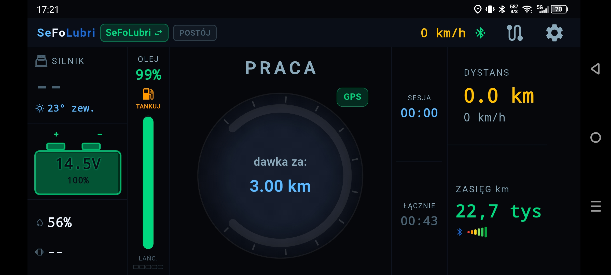
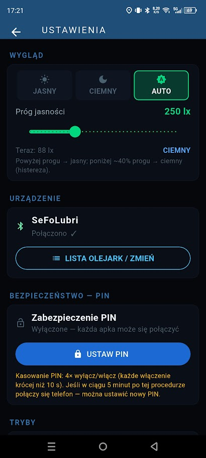
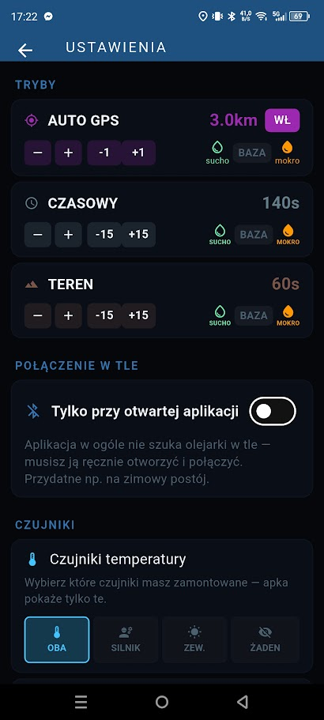
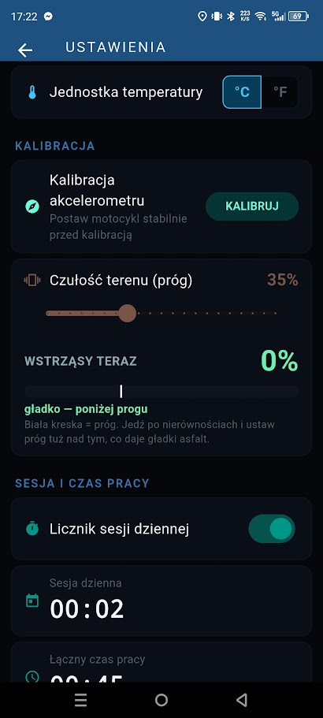
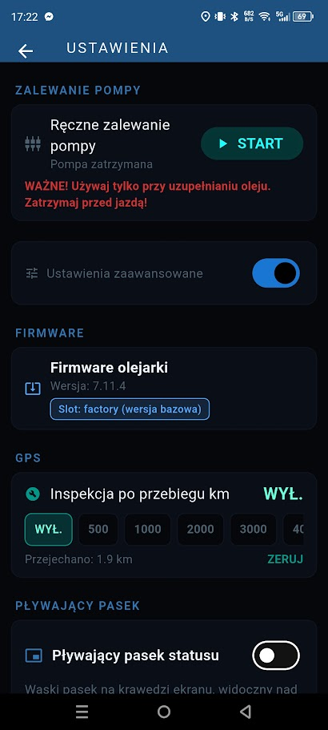
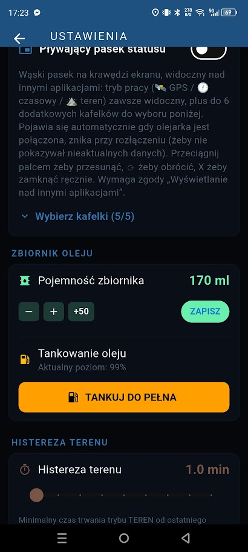
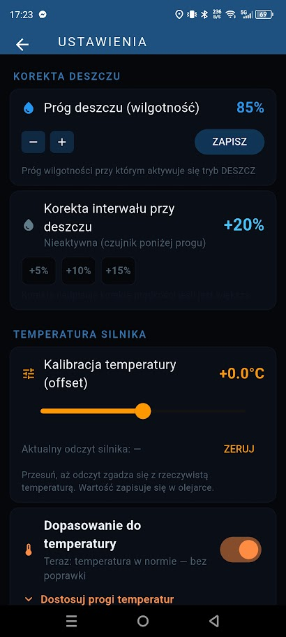
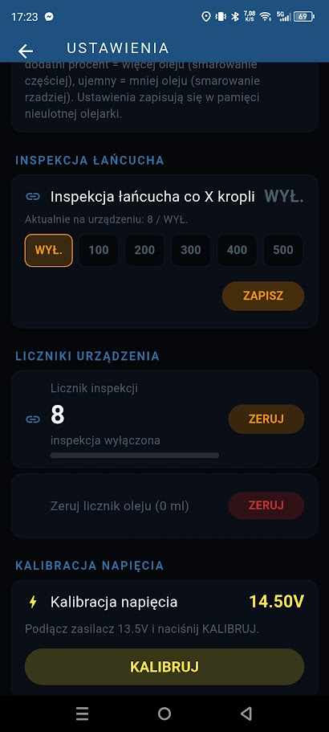

Aplikacja to pulpit Twojej olejarki: pokazuje, co dzieje się z motocyklem, pozwala zmienić sposób smarowania jednym dotknięciem, a jeśli zajdzie taka potrzeba, pozwala bezpiecznie wgrać nową wersję oprogramowania wprost z telefonu.
Po połączeniu widzisz stan olejarki i motocykla w jednym miejscu — bez przewijania i szukania. Duże, czytelne cyfry są widoczne nawet w rękawicach i w słońcu.

Aplikacja daje pełną kontrolę nad dawkowaniem — od podstawowego trybu pracy po precyzyjne dostrojenie czujników pod konkretny motocykl.

Dopasuj aplikację do siebie, zarządzaj kilkoma motocyklami i zabezpiecz olejarkę przed obcym telefonem.

Trzy tryby dawkowania do wyboru, każdy z osobnym interwałem i automatyczną korektą na deszcz.

Każda maszyna inaczej przenosi drgania — skalibruj czujnik ruchu i ustaw próg wykrywania terenu, obserwując wskazania na żywo.

Zalej układ po montażu, sprawdź wersję firmware i ustaw przypomnienie o przeglądzie.

Zawsze widoczny tryb pracy nad innymi aplikacjami oraz pełna kontrola nad poziomem oleju.

Drobne poprawki, które sprawiają, że olejarka pracuje dokładnie tak, jak chcesz.

Podgląd postępu do kolejnej kontroli łańcucha oraz dostrojenie pomiaru napięcia instalacji.
Duże cyfry i wyraźne kolory — rzut oka wystarczy, żeby wiedzieć, co się dzieje. Nie musisz zatrzymywać się ani zdejmować rękawic.
Po skonfigurowaniu olejarka pracuje samodzielnie. Telefon potrzebny jest tylko wtedy, gdy chcesz coś zmienić lub podejrzeć.
Olejarka działa na oprogramowaniu przetestowanym już w realnym użytkowaniu. Jeśli zajdzie konieczność albo pojawi się potrzeba dopracowania pewnych opcji, opracuję nową wersję — wgrasz ją bezpośrednio i bezpiecznie z aplikacji, bez odsyłania urządzenia.
Kod PIN sprawia, że obcy telefon nie posteruje Twoją olejarką. Zaufane telefony łączą się automatycznie, bez wpisywania kodu za każdym razem.
Aplikacja na Androida. Zainstaluj ją przed montażem — przyda się już przy zalewaniu układu i pierwszej konfiguracji.